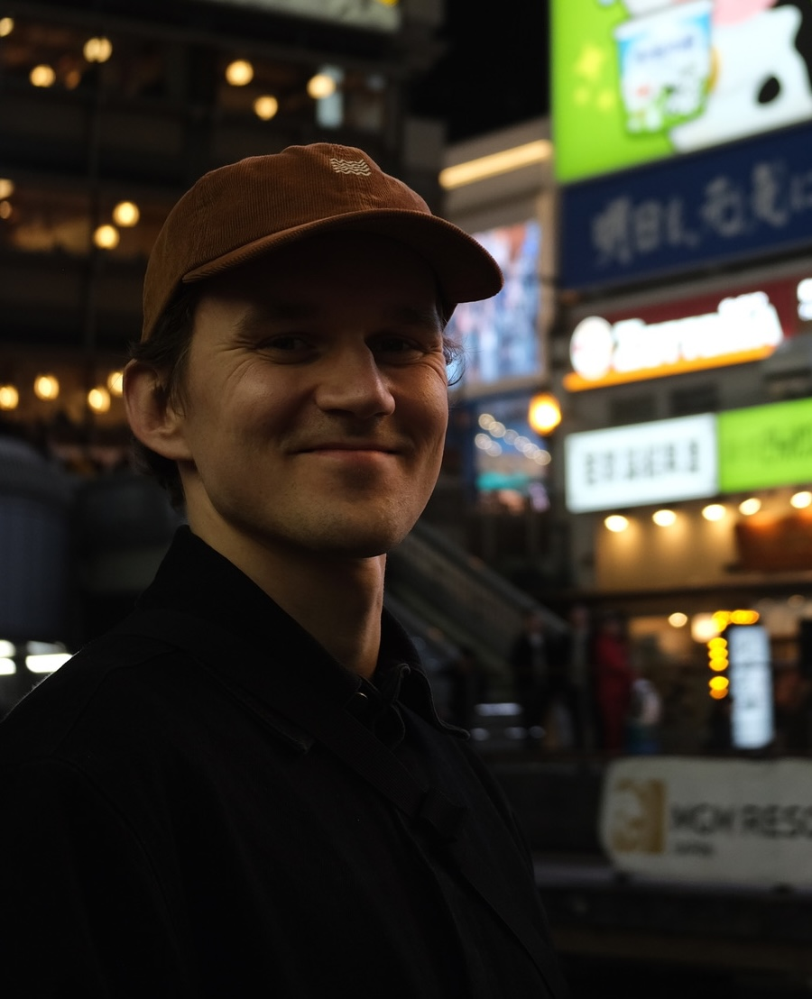

Marine Roboticist
Engineer at GeoNord AS
Applied researcher and software developer in marine robotics and autonomy, with experience across academia, defence, and industry.

Jens holds a PhD in Marine Technology with specialisation in Marine Cybernetics from NTNU (2024), where his dissertation Safe Autonomy in Marine Robotics developed new methods for autonomous risk awareness and management in marine robots. He was a PhD research fellow at the Department of Marine Technology (IMT) and the Centre of Excellence for Autonomous Marine Operations and Systems (SFF AMOS). He held a visiting PhD fellowship at UC Berkeley (Electrical Engineering and Computer Science, spring 2020) and completed a field course in Arctic marine technology at UNIS, Svalbard. He later worked as a researcher at the Norwegian Defence Research Establishment (FFI), developing autonomy algorithms for the HUGIN AUV, before joining GeoNord AS as an engineer, where he works with multibeam echo sounder and LiDAR-based seafloor and terrain mapping.
Novel probabilistic frameworks for autonomous risk awareness and mitigation in unstructured marine environments.
Optimization-based planning algorithms integrating real-time hazard maps for safe trajectory generation.
Autonomous operations beneath sea ice — altitude control, navigation, and adaptive sampling strategies.
Hybrid observer architectures for robust state estimation and sensor fusion in underwater navigation.
Intelligent sampling strategies that maximize information gain in dynamic and resource-constrained missions.
Autonomous survey planning for CSAS missions to achieve high-resolution seabed imagery.
Python library for Bayesian network inference over geospatial data. Combines heterogeneous data sources (GeoTIFF, WCS, in-memory arrays) to generate probabilistic spatial risk maps. Used for avalanche risk modeling.
Teaching Assistant
Exercises, grading, and student supervision over five years. Covered classical and modern control theory applied to marine vessels and robots.
Co-developer & Co-instructor
Co-developed the course from scratch — curriculum, lecture notes, and projects. Co-taught from the first run in fall 2020 through subsequent years.
Lab Operator & Field Scientist
Operated and maintained AUV, USV, and ROV platforms with associated sensor systems. Conducted scientific cruises in the Arctic Ocean (Svalbard), Lake Mjøsa, and Trøndelag.
Co-supervisor
Co-supervised multiple master students at NTNU. Supervised master and PhD students during posting at FFI (Norwegian Defence Research Establishment).
Open to collaborations, research discussions, and opportunities in marine autonomy and ocean technology.